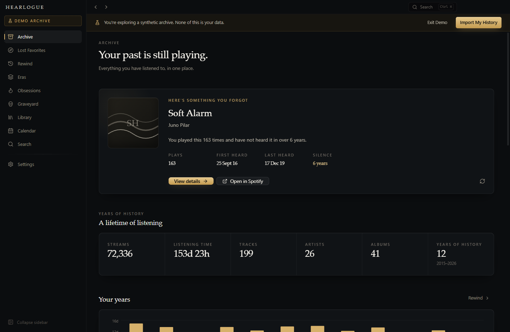
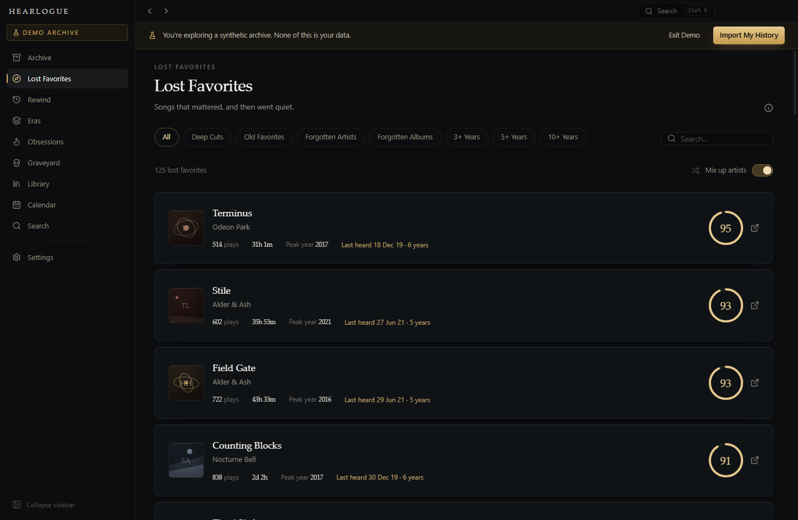
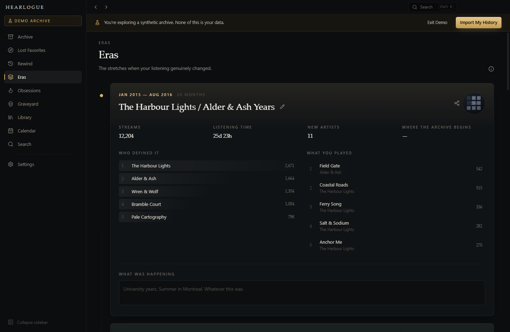
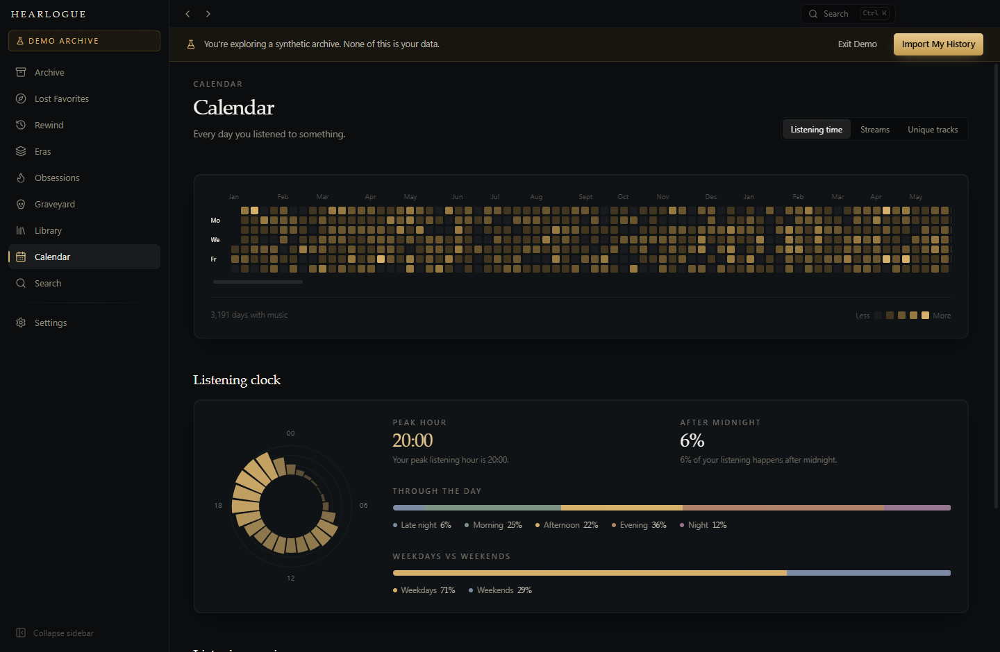

Lost Favorites
Songs with real history behind them — enough plays, enough time, few skips — that you have not returned to. Scored 0–100, with every dimension of the score visible.
Your past is still playing.
Turn years of Spotify listening history into a private archive of your musical life — and then find your way back into it.
Your listening history stays on this device. Always.
Windows 10 & 11 · Free and open source · No account required

What it finds
HEARLOGUE is built around what a listener actually wonders about: what did I love and stop playing? What was 2019 like? What took over my life for six weeks and then vanished?
Songs with real history behind them — enough plays, enough time, few skips — that you have not returned to. Scored 0–100, with every dimension of the score visible.
Any year or month, as you lived it. Including the part only your archive knows: what you loved that year and never played again.
The stretches where your listening genuinely changed, found by comparing who you played month after month — and named after the artists who defined them.
What took over, how hard, for how long — and what survived it. Real counts inside real date ranges, never an estimate.
Artists, tracks and albums that were once central and are now gone. Ranked by how significant they were, not just how long ago.
Tags, notes and Smart Collections that are entirely yours — a layer on top of the archive that Spotify never sees, because nothing is sent anywhere.
Lost Favorites
A track played twice in 2014 is not a lost favorite — it is a track you never liked. Four gates decide what qualifies before anything is scored at all.

Eras
Each month becomes a distribution over artists. Where that distribution genuinely shifts — and stays shifted — an era begins. One unusual week does not count.

Calendar & clock
Years of listening as a single heatmap, and the shape of an ordinary day beside it. Click any square to see exactly what was playing.

Privacy
Your listening history never leaves your computer.
Your export is read on your machine and written to a SQLite file in your own user folder. You can open it, copy it, or delete it by hand.
HEARLOGUE never connects to Spotify and never asks you to sign in. It reads the export file Spotify already gives you.
The app makes no network requests at all — enforced by a request blocker and a strict content security policy, not just by intention.
What gets thrown away. Some Spotify exports contain fields HEARLOGUE has
no use for. ip_addr_decrypted, user_agent_decrypted and
username are dropped while the file is being read and never written to disk —
the stored record has no field capable of holding them. Device strings are reduced to a
coarse family, so Windows 10 (10.0.19045; x64; AppX) becomes simply
windows. There is a test that imports records stuffed with an IP address and then
searches the raw bytes of the database to prove none of it landed.
Getting started
In your Spotify privacy settings, request Extended streaming history — not the basic export, which only covers the last twelve months. It arrives by email, usually within a few days.
A ZIP straight from Spotify, an extracted folder, or loose JSON files — all work. Re-importing later merges only what is genuinely new, never a duplicate.
No export yet? The app ships with a Demo Archive — a full synthetic listening life you can explore immediately, kept in a completely separate database.
Under the hood
Aggregates are computed once into derived tables, sequential analysis runs over columnar typed arrays, and imports happen in a separate process so the window never blocks.
Free, open source, and yours alone. Nothing to sign up for and nothing to send anywhere.